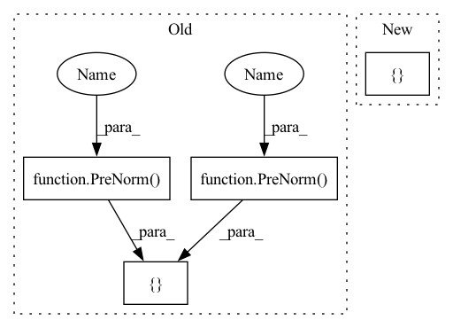

Pattern ID :2446
Before Change
shared_kv_proj = default(shared_kv_proj, attn.to_kv)
attn.to_kv = shared_kv_proj
self.layers.append(nn.ModuleList([
Residual(PreNorm(dim , attn) ),
Residual(PreNorm(dim , ff) )After Change
memory_is_empty = lambda *args, **kwargs: not exists(kwargs["memory"])
attn = SkipIf(memory_is_empty, attn)
self.layers.append(nn.ModuleList([
attn,
ffIn pattern: SUPERPATTERN
Frequency: 3
Non-data size: 4
Instances Fragment ID: 10290193
Project Name: lucidrains/feedback-transformer-pytorch
Commit Name: 60f98187905b58c55f0a3061201d10a8f7d49122
Time: 2021-02-03
Author: lucidrains@gmail.com
File Name: feedback_transformer_pytorch/feedback_transformer_pytorch.py
M Class Name: FeedbackTransformer
N Class Name: FeedbackTransformer
M Method Name: __init__(1)
N Method Name: __init__(1)
M Parent Class: nn.Module
N Parent Class: nn.Module
M File Name: feedback_transformer_pytorch/feedback_transformer_pytorch.py
N File Name: feedback_transformer_pytorch/feedback_transformer_pytorch.py
M Start Line: 204
M End Line: 213
N Start Line: 217
N End Line: 232
Before Change
super().__init__()
self.layers = nn.LayerList([])
for _ in range(depth):
self.layers.append(nn.LayerList([
PreNorm( dim, Attention(dim, heads, dim_head, dropout)) ,
PreNorm( dim, FeedForward(dim, mlp_dim, dropout))
]))
def forward(self, x):
for attn, ff in self.layers:After Change
super().__init__()
depth_decay = [x.item() for x in paddle.linspace(0, droppath, depth)]
layer_list = []
for i in range(depth):
layer_list.append(EncoderLayer(embed_dim,
num_heads,
qkv_bias, Fragment ID: 10290180
Project Name: br-idl/paddlevit
Commit Name: 8830bbf1fbf940d9ae0cfd9625201c78addcf9f5
Time: 2021-10-20
Author: xperzy@gmail.com
File Name: image_classification/MobileViT/mobile_vit.py
M Class Name: Transformer
N Class Name: Transformer
M Method Name: __init__(9)
N Method Name: __init__(7)
M Parent Class: nn.Layer
N Parent Class: nn.Layer
M File Name: image_classification/MobileViT/mobile_vit.py
N File Name: image_classification/MobileViT/mobile_vit.py
M Start Line: 86
M End Line: 95
N Start Line: 190
N End Line: 215
Before Change
shared_kv_proj = default(shared_kv_proj, attn.to_kv)
attn.to_kv = shared_kv_proj
self.layers.append(nn.ModuleList([
Residual(PreNorm( dim, attn) ),
Residual(PreNorm( dim, ff) )After Change
memory_is_empty = lambda *args, **kwargs: not exists(kwargs["memory"])
attn = SkipIf(memory_is_empty, attn)
self.layers.append(nn.ModuleList([
attn,
ff Fragment ID: 10290183
Project Name: lucidrains/feedback-transformer-pytorch
Commit Name: 60f98187905b58c55f0a3061201d10a8f7d49122
Time: 2021-02-03
Author: lucidrains@gmail.com
File Name: feedback_transformer_pytorch/feedback_transformer_pytorch.py
M Class Name: FeedbackTransformer
N Class Name: FeedbackTransformer
M Method Name: __init__(1)
N Method Name: __init__(1)
M Parent Class: nn.Module
N Parent Class: nn.Module
M File Name: feedback_transformer_pytorch/feedback_transformer_pytorch.py
N File Name: feedback_transformer_pytorch/feedback_transformer_pytorch.py
M Start Line: 204
M End Line: 213
N Start Line: 217
N End Line: 232
Before Change
self.layers = nn.ModuleList([])
for _ in range(depth):
self.layers.append(nn.ModuleList([
PreNorm(latent_dim, Attention(latent_dim, input_dim, dropout = attn_dropout), context_dim = input_dim),
PreNorm( latent_dim, FeedForward(latent_dim, dropout = ff_dropout)) ,
PreNorm( latent_dim, Attention(latent_dim, dropout = attn_dropout)) ,
PreNorm(latent_dim, FeedForward(latent_dim, dropout = ff_dropout))After Change
self.layers = nn.ModuleList([])
for _ in range(depth):
self.layers.append(nn.ModuleList([
get_cross_attn(),
get_cross_ff(),
get_latent_attn(),
get_latent_ff() Fragment ID: 10290192
Project Name: lucidrains/perceiver-pytorch
Commit Name: f0455b6ff59331de8151bf659b62ddf97ac802bd
Time: 2021-03-04
Author: lucidrains@gmail.com
File Name: perceiver_pytorch/perceiver_pytorch.py
M Class Name: Perceiver
N Class Name: Perceiver
M Method Name: __init__(1)
N Method Name: __init__(1)
M Parent Class: nn.Module
N Parent Class: nn.Module
M File Name: perceiver_pytorch/perceiver_pytorch.py
N File Name: perceiver_pytorch/perceiver_pytorch.py
M Start Line: 115
M End Line: 120
N Start Line: 127
N End Line: 142